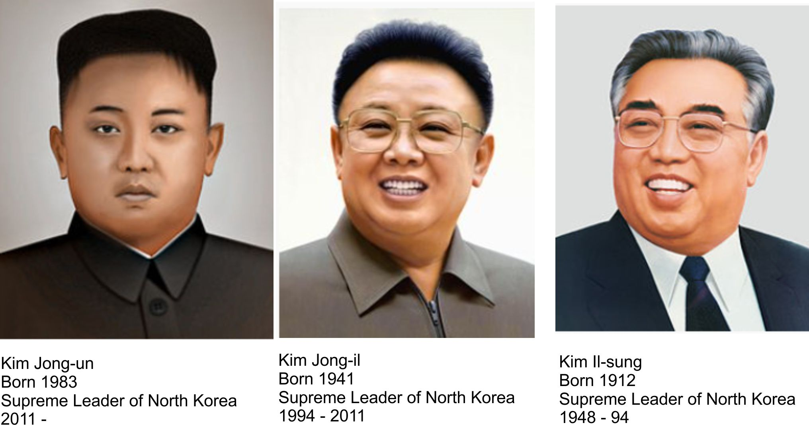
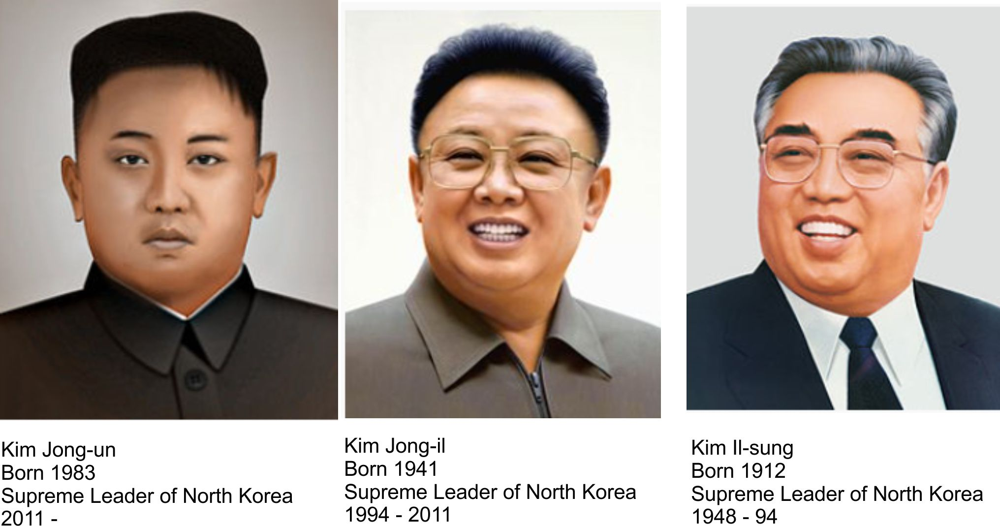
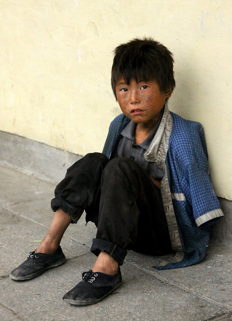

North Korea
An overview of North Korea's history and the conditions of its people.
Above is a map of the 38th Parallel (the division between North and South Korea)
 

At the end of WWII, Korea was divided into North Korea, which was under the Communist Soviet Union’s control, and
South Korea, which was under U.S. control. Beginning the long reign of “Kims” in the North, Kim Il-sung became its first
Supreme Leader in 1948, followed by his son Kim Jong-il in 1994 and Sung’s grandson, Kim Jong-un, in 2011.
North Korea is the world's only necrocracy, a government that still operates under the rules of a deceased leader.
It has 51 social categories in which people are ranked by their loyalty to the regime. For example, those with greater
loyalty live in the main city of Pyongyang and are exempt from mistreatment. On the other hand, those who have broken
the law are executed, and their families are sent to labor camps.
Today in North Korea, people are isolated from the outside world.
For instance, their world wide web is restricted to foreigners and a select amount of cities.
To promote a more positive image, the North Korean state television portrays the country as a land of plenty.
These images depict an advanced economy, happy and well-fed children, and shops overflowing with goods. But, on the contrary,
thanks to a famine that killed more than a million North Koreans in the 1990s , ¾ of the population is starving. Because parents
cannot care for their children, homeless orphans live in the streets, trying to stay warm in below-zero weather.

Below are a few longer documentaries on North Korea. Click here to watch a shorter video on North Korean government.

Link to more facts on North Korea

Link to a the story of an escapee
Link to an organization that works to help refugees